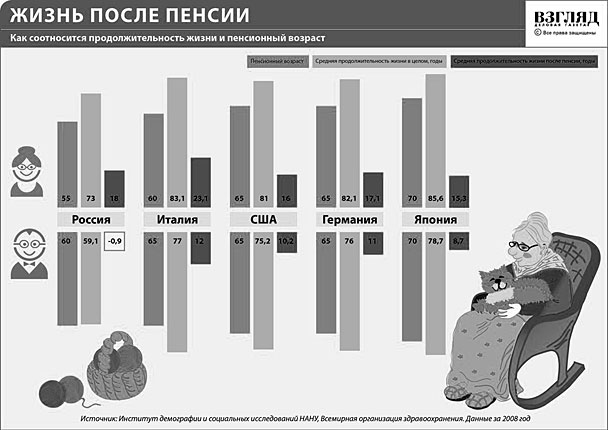
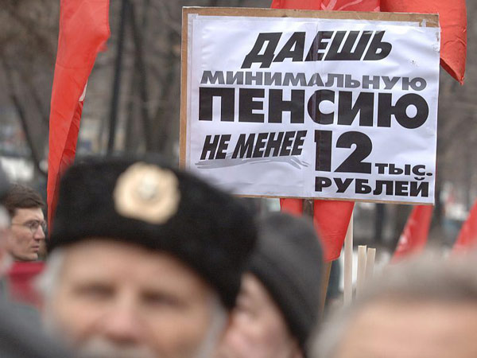

Сегодня власти и представители крупного капитала пытаются приучить трудящихся к мысли о неизбежности увеличения возраста выхода на пенсию. И это — наряду с объявлением о намерении создавать инновационную экономику.
Между тем инновационной является такая экономика, которая развивается на основе систематического, широкомасштабного применения комплекса достижений научно-технического прогресса и потому характеризуется ростом общественной производительности труда.
Такой рост означает, что при одном и том же фонде рабочего времени общества (годовой фонд рабочего времени исчисляется суммированием всех отработанных за год рабочих часов) создается общественный продукт большей величины, или тот же продукт — при сокращении фонда рабочего времени. Возможен вариант, когда рост общественного продукта сочетается с сокращением фонда рабочего времени. Не исключено, что в связи с увеличением численности занятого населения общая масса рабочего времени на какой-то период возрастает, но и в этом случае, как и во всех предыдущих, затраты общественного труда в расчете на единицу продукта снижаются.
Как показывает исторический опыт, в долгосрочном плане типичным является рост производительности труда, приводящий к увеличению общественного продукта при сокращении объема рабочего времени в расчете на одного занятого. Так, с 1879 г. по 1992 г. среднегодовой фонд времени, отработанного одним занятым, снизился в Великобритании на 50%, в США, Германии и Франции — на 46–47%, в Японии — на 36%.
Если брать работников производительного труда, прежде всего, промышленных и сельскохозяйственных рабочих, — то уменьшается не только их доля в составе совокупного работника, но и абсолютная численность. Поэтому общественный фонд рабочего времени таких работников сокращается, тогда, как величина производимого ими общественного продукта возрастает.
В США, например, в середине 50-х годов было около 25 млн. рабочих (при общей численности населения 165 млн. человек). В настоящее время при увеличении населения до 310 млн. численность промышленного рабочего класса США не превышает 12 млн. При этом объем промышленного производства увеличился более чем в 4 раза.
Такому сочетанию не приходится удивляться с учетом широкого фронта инноваций в машиностроении, приводящих к быстрой смене поколений техники, повышению квалификационно-образовательного уровня работников.
Рост продукта в сочетании с сокращением фонда рабочего времени делает объективно возможным повышение уровня реального содержания заработной платы при уменьшении рабочего и увеличении свободного времени работников и общества в целом. Так, за столетие средняя зарплата промышленных рабочих многократно выросла, рабочий день сократился на 1–2 часа, а рабочая неделя уменьшилась на 15–20 часов, сформировалась система пенсионного обеспечения, позволяющая завершать трудовую деятельность по достижении определенного возраста.
Безусловно, активизация инновационных процессов создает объективные предпосылки для того, чтобы рост благосостояния работников продолжался во всех формах. Не удивительно, что норвежские профсоюзы не только добиваются повышения зарплаты, но уже в 1997 г. поставили задачу введения 6-часового рабочего дня и 30-часовой рабочей недели.
С учетом данной закономерности следует решать и проблему определения верхней границы трудоспособного возраста.
Точку зрения об экономической неизбежности увеличения возраста выхода на пенсию мотивируют растущей долей пенсионеров в российском обществе. Предполагается, что будет невозможно материально обеспечить пенсионеров и потому якобы понадобится увеличить фонд рабочего времени общества за счет более продолжительного трудового стажа каждого работника.
Пенсионеры — не единственная категория нетрудоспособных. Не следует забывать и о подрастающем поколении, которое тоже обеспечивается трудоспособными. В 2009 году численность трудоспособных составляла в России 89 млн. человек (приблизительно 63% от общей численности населения), в 2020 году, по прогнозам, составит 79 млн. (около 58 % от численности населения при существующей его динамике). Итак, возрастание доли нетрудоспособных на 5 процентных пунктов расценивается как неизбежно повышающее возраст выхода на пенсию.
Между тем, основным экономическим фактором, определяющим объем рабочего времени общества, является рост производительности труда, что означает сокращение затрат труда в расчете на единицу продукта. Типичным для современной экономики является рост общественного продукта при уменьшении фонда рабочего времени общества. Этим достигаются удовлетворение возвышающихся общественных потребностей в материальных продуктах и увеличение свободного времени как времени для деятельности, свободной от материального производства.
Перед российской экономикой объективно стоит задача обеспечить рост производительности труда, который позволит увеличить общественный продукт при сокращении численности занятых, — задача, вполне разрешимая.
Даже при сохранении существующих темпов роста производительности труда в российской экономике ее уровень к 2020 году возрастет на 30–40%. Это с лихвой компенсирует сокращение на 12% фонда рабочего времени общества вследствие уменьшения численности занятых. При осуществлении на деле инновационной ориентации экономики рост производительности будет существенно выше.
Таким образом, в условиях развития российского производства нет необходимости, ни неизбежности увеличения возраста выхода на пенсию.
Если же производство не будет развиваться, то увеличением пенсионного возраста не обеспечить растущие потребности российского общества. Больше того, увеличение возраста выхода на пенсию — путь, связанный с наращиванием трудовых затрат в порядке компенсации уменьшения доли занятых, является тупиковым. Без должного повышения производительности труда потребуется дальнейшее увеличение пенсионного возраста, независимо от сохранения трудоспособности старшего поколения, что в итоге приведет к скачку смертности пожилых людей, искусственно причисленных к трудоспособным, и в результате — к падению фонда рабочего времени общества.
Необоснованность повышения пенсионного возраста с точки зрения обеспечения роста производства не исключает увеличения периода трудовой активности членов общества, движимых потребностью участвовать в выполнении важнейшей общественной функции без ущерба для своего здоровья.
Возраст выхода на пенсию, диктуемый потребностями обеспечения здоровья, зависит от того, какой уровень трудовых затрат работников является общественно нормальным. Задается такой уровень, в первую очередь, продолжительностью рабочего дня и характером других условий труда. Очевидно, что чем выше нормальная продолжительность рабочего дня, чем интенсивнее труд, тем сложнее с возрастом выполнять подобную норму, тем раньше должен наступать возраст, дающий право на получение пенсии.
Разумеется, право на получение пенсии не означает обязанности прекратить трудовую деятельность. Человек вправе отказаться от продолжения труда, но может и выбрать трудовую нагрузку по состоянию своего здоровья: от сохранения прежней трудовой деятельности до перехода к более легкому труду.
Существующий в России возраст выхода на пенсию был законодательно установлен в 30-е годы при наличии 7-часового рабочего дня. С 1967 года в СССР в мирное время рабочий день удлинили с 7 до 8 часов, что, вообще говоря, служило основанием для уменьшения возраста выхода на пенсию, но деформированный социализм, под прикрытием ложного названия «развитого социализма» проигнорировал эту закономерность. Средняя продолжительность жизни лиц, вышедших на пенсию, увеличивалась, в первую очередь, за счет улучшения медицинского обслуживания и более весомого пенсионного обеспечения людей, утративших трудоспособность.
Сохранение в России 8-часового рабочего дня объективно исключает возможность увеличения законодательно установленного трудоспособного возраста за существующие рамки без ущерба для здоровья трудящихся.
Больше того, труд российских работников многих, преимущественно рабочих, профессий (шахтеров, докеров, сталеваров, авиадиспетчеров и т.д.) является настолько интенсивным или осуществляется при таких неблагоприятных условиях, что трудоспособность утрачивается быстрее, чем в среднем. Даже более ранний срок выхода таких работников на пенсию не гарантирует, что продолжительность их жизни достигнет средней для общества величины.
Возможно, при доведении рабочего дня трудящихся данных профессий до трех-четырех-пяти часов (без увеличения интенсивности труда и без сокращения общего заработка) появилась бы предпосылка увеличения периода их трудоспособности. Но пока такое сокращение рабочего дня не произошло, остаются необходимыми существующие условия выхода на пенсию.
Точно так же общее увеличение возраста выхода на пенсию предполагает общее сокращение рабочего дня. Скажем, увеличение пенсионного возраста до 65 лет требует введения 6-часового рабочего дня с тем, чтобы увеличить потенциал трудоспособности у молодых поколений, которые станут пенсионерами в более позднем возрасте. При таких условиях увеличение возраста выхода на пенсию будет сочетаться с уменьшением времени, отработанного в расчете на одного занятого за период трудоспособности (по нашим расчетам, сокращение составит приблизительно 10 000 часов), что согласуется с закономерностью роста свободного времени как времени для свободного развития человека.
Ссылка на то, что сегодня значительная доля лиц, получающих пенсии, продолжают трудиться, не раскрывает мотивов подобной работы: угроза материальной необеспеченности, сохраняющаяся для многих пенсионеров, вынуждает работать, не считаясь с ущербом для здоровья.
Попытка навязать российскому обществу увеличение пенсионного возраста без сокращения рабочего дня, а тем более вместе с удлинением рабочего времени, означает ускоренное выталкивание из жизни работников, занятых трудом при неблагоприятных условиях, повышенной интенсивности. Неизбежной реакцией на подобную меру был бы катастрофический для российской экономики отток кадров из материального производства, из других сфер напряженного, ответственного труда. И тогда попытки сформирования инновационной экономики окажутся сорванными.
Вот почему начинать следует не с увеличения возраста выхода на пенсию, а с сокращения рабочего дня до 6 часов, обеспечивающего общее уменьшение продолжительности рабочего времени и активизирующего систему материального стимулирования инновационных процессов в российской экономике.